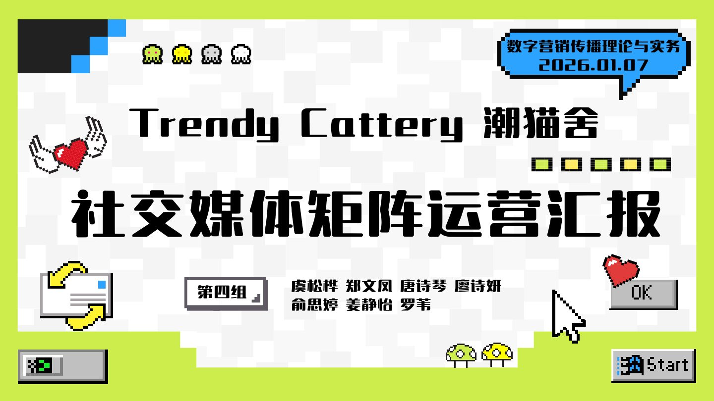

03
Social Matrix · Private Domain
从内容
到生意。
项目背景
这是一个为线下猫舍做的社媒运营项目。目标不只是涨粉，而是让看到内容的人，最终走进店里。
猫舍的素材天然有吸引力，但「可爱」不等于「转化」。项目需要解决三个问题：三个平台分别承担什么角色、什么样的内容能被算法推荐、流量来了之后由谁承接。
我的工作
负责整体账号定位与内容规划，搭建抖音、小红书、视频号三平台矩阵；结合热点制作图文与短视频；用 Excel 搭建数据看板，复盘完播率与互动率；设计从评论区、私信到线下到店的承接路径。
关键动作
-
三个平台，三种职责 抖音负责曝光与破圈，小红书负责种草与搜索承接，视频号负责熟人关系链的信任转化。
-
拆解爆款，而不是模仿爆款 拆开头、节奏、情绪点与评论区反馈，提炼可复用的结构，再套进猫舍自己的场景。
-
把流量接到线下 在内容与评论区设计引导动作，把咨询收拢到私域，再用到店福利完成最后一跳。
项目结果
4600+累计获赞
20+线下咨询
2w+带动销售额
搭建抖音+小红书+视频号社媒矩阵，结合热点制作爆款图文与短视频，运用 Excel 数据看板复盘完播率与互动率以指导选题优化。打通公私域闭环，向线下导流咨询 20+ 例，累计获赞 4600+，小红书涨粉 400+、抖音涨粉 350+，为甲方提增 2w+ 销售额。
完整运营汇报
下面保留汇报方案的全部 31 页，包括账号痛点、竞品分析、内容定位、运营数据与转化路径。可左右滑动、使用方向键切换，或点击缩略图跳转。

复盘
这是我最完整的一次「从内容到生意」的练习。它让我理解，社媒运营不是把每个平台都发一遍，而是让每个平台承担不同的任务，再用一条清晰的路径把用户接住。